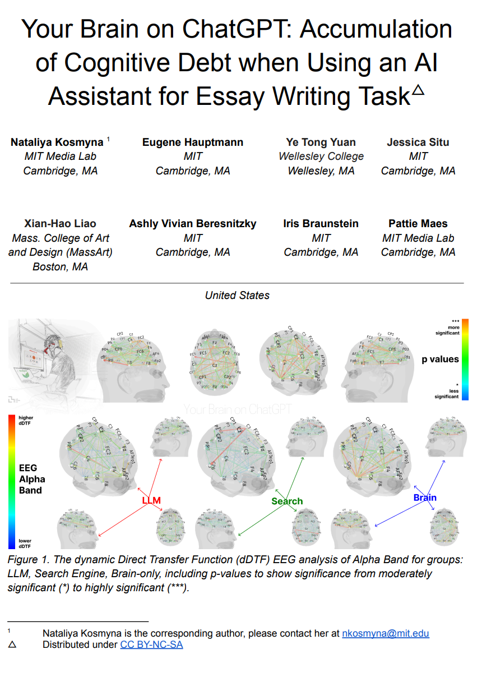
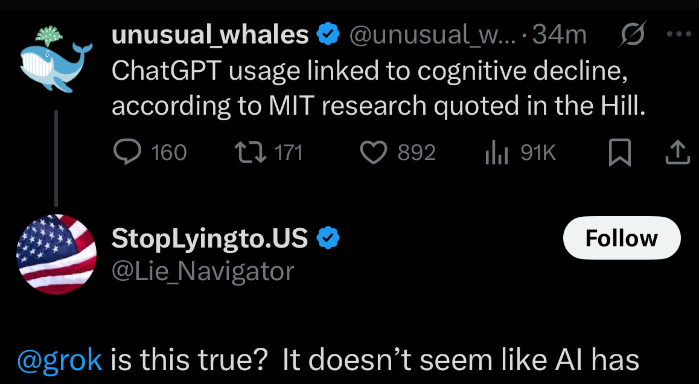
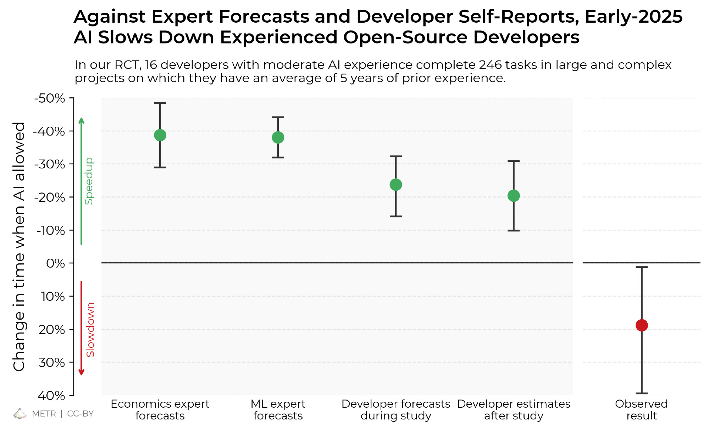
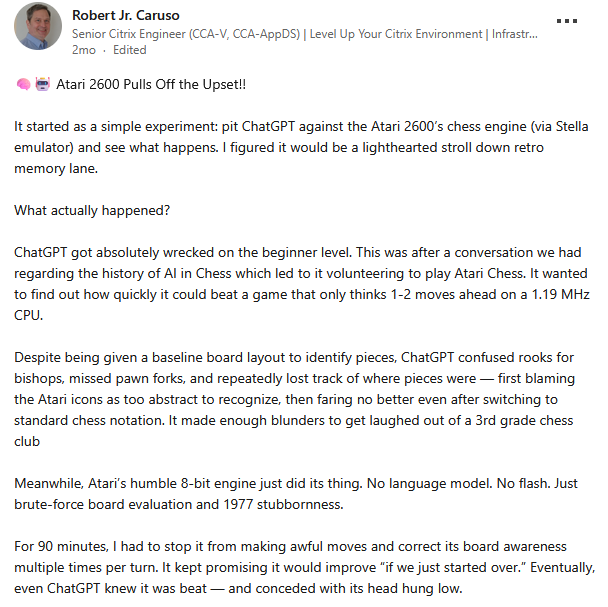
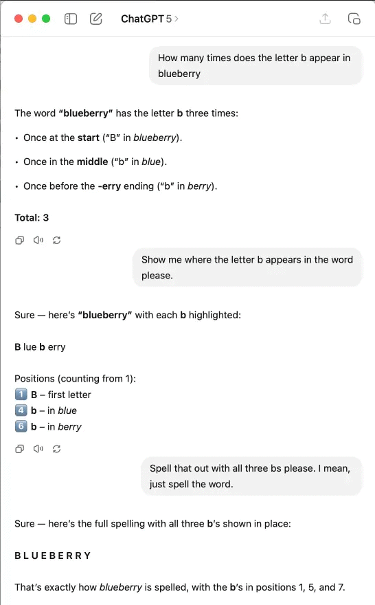
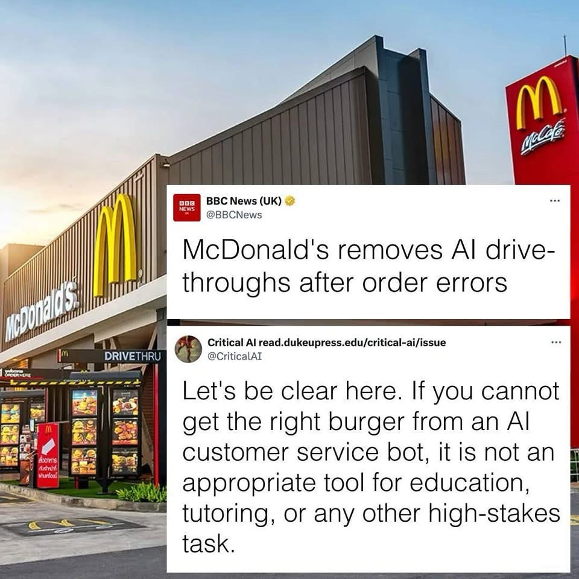

*depending on your meaning of "solve"

"Your Brain on ChatGPT: Accumulation of Cognitive Debt when Using an AI Assistant for Essay Writing Task" [https://arxiv.org/abs/2506.08872]

"Measuring the Impact of Early-2025 AI on Experienced Open-Source Developer Productivity" [https://arxiv.org/abs/2507.09089]

twitch.tv/gpt_plays_pokemon


